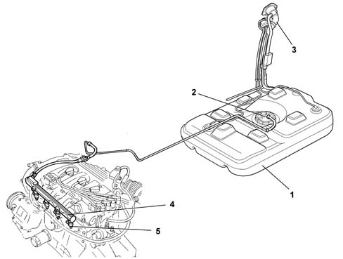
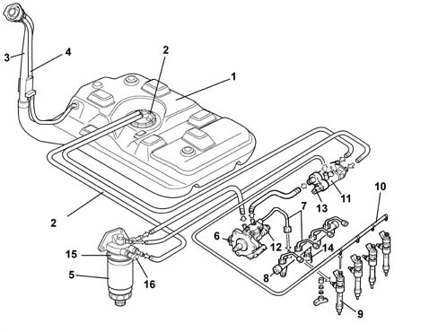
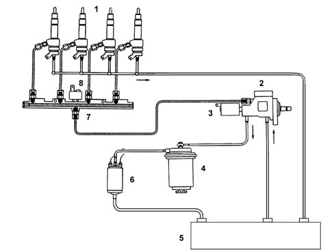
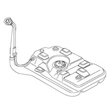
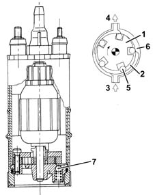
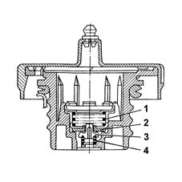
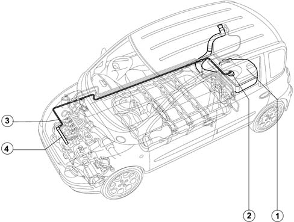
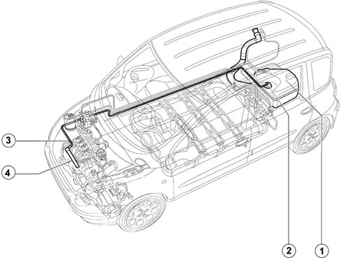
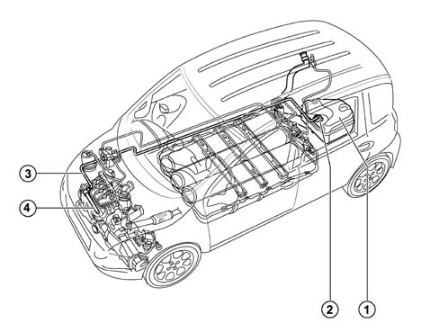
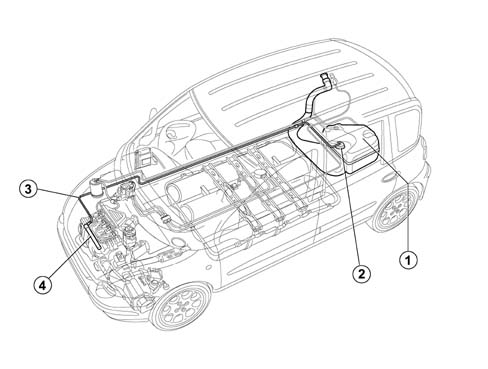

INTRODUCTION - FUEL TANK AND PIPES
- Path
- Descriptions > 10 ENGINE UNIT > 1040 FUEL TANK AND PIPES > INTRODUCTION - FUEL TANK AND PIPES
- Kind
- system description
- Applies to
- all engines; all production periods; only with equipment: GPOWER and Euro 3 and BIPOWER
- Interactive page
- https://sloeber94.github.io/elrnDB-fMltpl/en/#/2892421
Applies to: engines: 1.6 16v; all production periods; only with equipment: GPOWER and Euro 3 and BIPOWER
The fuel system is "returnless", i.e. with a single pipe connecting fuel tank and engine. The return pipe, filter and pressure regulator have therefore been eliminated. The filter and pressure regulator are built into the pump assembly.
This:
- minimises the possibility of the vehicle catching fire in case of an accident.
- reduces fuel vapour emissions to the atmosphere.
The fuel tank is located in front of the rear axle. It is made out of plastic with high mechanical strength.
FUEL SUPPLY SYSTEM
-

1, Fuel tank
2, Submerged pump assembly
3, Fuel filler pipe
4, Fuel manifold
5, Injectors (see 1056)
Applies to: engines: 1.9 JTD 8V; all production periods; only with equipment: GPOWER and Euro 3 and BIPOWER
The fuel system is divided into a low pressure circuit and a high pressure circuit.
The low pressure circuit consists of:
- submerged auxiliary pump;
- diesel filter;
- return manifold.
The high pressure circuit consists of:
- pressure pump ();
- distribution manifold ().
The diesel is drawn in from the tank by means of an electric pump operating at 12 V which is designed to provide a suitable flow rate which also ensures the lubrication and cooling of the Radialjet pump.
The diesel filter is fitted between the electric pump and the Radialjet pump.
The high pressure hydraulic connections are through steel pipes with a 2 mm internal diameter and 6 mm external diameter.
The pump recirculation should be sent to the tank separately from the injector recirculation which, after being collected in a single pipe, is also sent to the tank.

1, Fuel tank
2, Submerged fuel assembly complete with level gauge control
3, Fuel filler pipe
4, Multifunction valve
5, Diesel filter cartridge
6, Pressure pump
7, High pressure pipe
8, Distribution manifold
9, Injectors
10, Injector recirculation
11, Return manifold (low pressure)
12, Pressure regulator
13, Fuel temperature sensor
14, Fuel pressure sensor
15, Diesel heater
16, Thermal switch
-

1, Injector
2, Pressure pump
3, Pressure regulator
4 - Fuel filter
5, Fuel tank
6, Sumberged fuel pump
7, Distribution manifold (rail)
8, Fuel pressure sensor
CONSTRUCTION SPECIFICATIONS
The 70 litre capacity fuel tank is made out of plastic.
It is equipped with a flexible filler fitting and includes a seat for installation of the fuel pump and level gauge.

CONSTRUCTION SPECIFICATIONS
The electric pump submerged in the fuel is volumetric roller type with brush motor and permanent magnet excitation.

OPERATION
Impeller (1) is turned by the electric motor to create volumes (2) that migrate from intake port (3) to outlet port (4).
These volumes are delimited by rollers (5) that adhere to outer race (6) during motor rotation.
The pump is fitted with two valves, a check valve to prevent the fuel circuit emptying (with the pump off) and a second pressure relief valve (7) that recirculates the supply when pressure levels exceed 5 bar.
OPERATION
This valve is built into the fuel filler cap and performs as follows, depending on fuel pressure in the tank.
- discharges the excess pressure that is created inside the tank outwards (safety function); the pressure acts on the plate (2) and, overcoming the spring (1) loading, allows the excess vapours to be discharged to the outside.
- It allows the flow of outside air into the tank when, as a result of the fuel consumption, an excessive vacuum is created in the tank (ventilation function). In this case, when the vacuum exceeds the spring (4) loading, it move the valve (3), allowing the intake of air.

Applies to: engines: 1.6 16v; all production periods; only with equipment: GPOWER and Euro 3 and BIPOWER
The dual operation fuel system (petrol and methane) consists of a traditional fuel system (Magneti Marelli IAW 49F) for petrol operation and a built in (OMT Tartarini) CNG fuel system for methane operation.
The methane fuel system is described in subassembly 1042.
The petrol supply system is "returnless", i.e. with a single pipe connecting fuel tank and engine. The return pipe, filter and pressure regulator have therefore been eliminated. The filter and pressure regulator are built into the pump assembly.
This:
- minimises the possibility of the vehicle catching fire in case of an accident.
- reduces fuel vapour emissions to the atmosphere.
The fuel tank is located in front of the rear axle. It is made out of plastic with high mechanical strength.
Fuel supply system
-

1, Fuel tank
2, Submerged pump assembly
3, Petrol supply pipe
4, Petrol manifold with injectors
The dual operation fuel system (petrol and methane) consists of a traditional fuel system (Magneti Marelli IAW4EF.G1) for petrol operation and a built in (OmT Metatron) CNG fuel system for methane operation.
The methane fuel system is described in subassembly 1042.
The petrol supply system is "returnless", i.e. with a single pipe connecting fuel tank and engine. The return pipe, filter and pressure regulator have therefore been eliminated. The filter and pressure regulator are built into the pump assembly.
This:
- minimises the possibility of the vehicle catching fire in case of an accident.
- reduces fuel vapour emissions to the atmosphere.
The fuel tank is located in front of the rear axle. It is made out of plastic with high mechanical strength.
FUEL SUPPLY SYSTEM
The diagram showing the fuel system is illustrated below.

1, Fuel tank
2, Submerged pump assembly
3, Petrol supply pipe
4, Petrol manifold/injectors
Applies to: engines: 1.6 16v; production: da 06/04; only with equipment: GPOWER and Euro 3 and BIPOWER
The dual operation fuel system (petrol and methane) consists of a traditional fuel system (Magneti Marelli IAW4EF.G1) for petrol operation and a built in (OMT Tartarini) CNG fuel system for methane operation.
The methane fuel system is described in subassembly 1042.
The petrol supply system is "returnless", i.e. with a single pipe connecting fuel tank and engine. The return pipe, filter and pressure regulator have therefore been eliminated. The filter and pressure regulator are built into the pump assembly.
This:
- minimises the possibility of the vehicle catching fire in case of an accident.
- reduces fuel vapour emissions to the atmosphere.
The fuel tank is located behind the rear axle. It is made out of plastic with high mechanical strength.
FUEL SUPPLY SYSTEM
The diagram showing the fuel system is illustrated below.

- Fuel tank
- Submerged pump assembly
- Petrol supply pipe
- Petrol manifold/injectors
Applies to: engines: 1.6 16v; all production periods; only with equipment: GPOWER and Euro 3 and BIPOWER
The dual fuel system (petrol and LPG) consists of a combination of a basic conventional petrol system (Magneti Marelli IAW 4EF.G1) for petrol operation and a Liquid Petroleum Gas supply system (Vialle/Metatron) for LPG operation.
The LPG supply system is described in subunit 1043.
The petrol supply system is "returnless", i.e. with a single pipe connecting fuel tank and engine. The return pipe, filter and pressure regulator have therefore been eliminated. The filter and pressure regulator are built into the pump assembly.
This:
- minimises the possibility of the vehicle catching fire in case of an accident.
- reduces fuel vapour emissions to the atmosphere.
The fuel tank is located in front of the rear axle. It is made out of plastic with high mechanical strength.
FUEL SUPPLY SYSTEM
The diagram showing the fuel system is illustrated below.

1, Fuel tank
2, Submerged pump assembly
3, Petrol supply pipe
4, Petrol manifold/injectors